Welcome to Thisaga SL Travel
Thisaga SL Travel is your ultimate guide to exploring the beautiful island of Sri Lanka. Whether you're looking to discover ancient fortresses, sacred temples, or vibrant wildlife, we have the information you need. Explore our curated list of top tourist destinations and plan your perfect trip to Sri Lanka!
Temple of the Tooth Relic
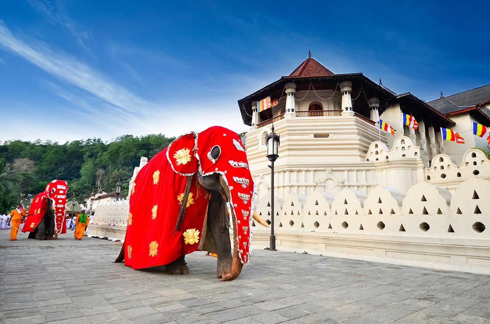Visiting Hours: 5:30 AM - 8:00 PM
The Temple of the Tooth Relic, located in Kandy, is one of the most sacred Buddhist sites in Sri Lanka.
View on MapGangaramaya Temple
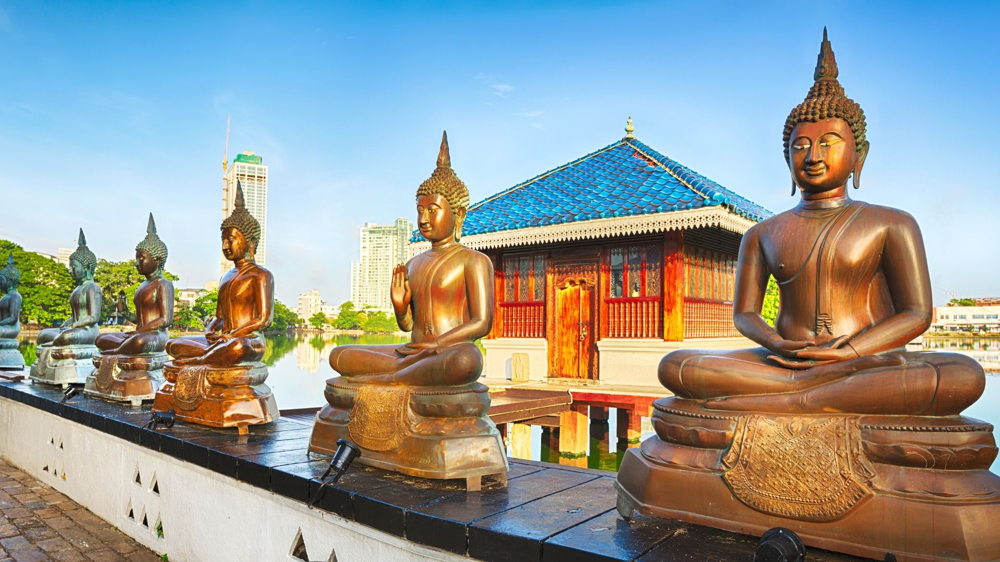Visiting Hours: 5:00 AM - 10:00 PM
Gangaramaya Temple, located in Colombo, is a key center for Buddhist worship and learning.
View on MapDambulla Cave Temple

Visiting Hours: 7:30 AM - 5:30 PM
Dambulla Cave Temple is a UNESCO World Heritage site with a complex of ancient Buddhist temples.
View on MapMihintale
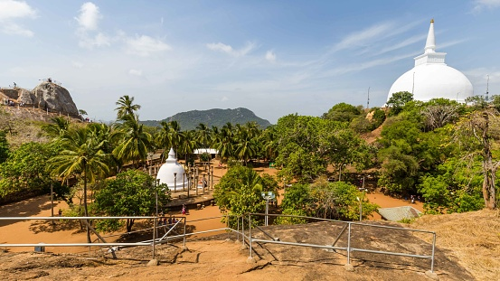Visiting Hours: 6:00 AM - 6:00 PM
Mihintale is a historic site with significant religious and historical importance, featuring ancient ruins and a beautiful viewpoint.
View on MapYala National Park
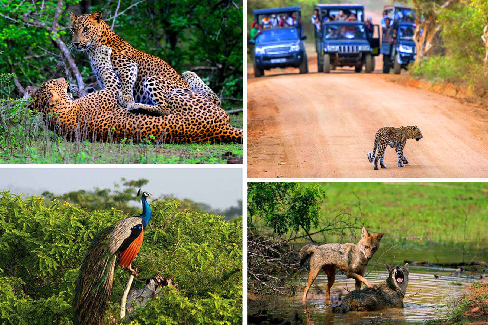Visiting Hours: 6:00 AM - 6:00 PM
Yala National Park is famous for its diverse wildlife, including leopards, elephants, and a variety of bird species.
View on MapHorton Plains

Visiting Hours: 6:00 AM - 6:00 PM
Horton Plains is a beautiful plateau with rich biodiversity and stunning views, including the famous World's End.
View on MapSinharaja Forest Reserve

Visiting Hours: 6:00 AM - 6:00 PM
Sinharaja is a UNESCO World Heritage Site and one of the last remaining virgin rainforests in Sri Lanka.
View on MapAdam's Peak
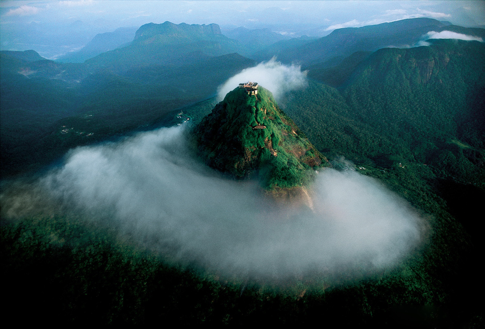Visiting Hours: Open 24 hours (Best time: December - May)
Adam's Peak is a sacred mountain in Sri Lanka, famous for its "sacred footprint" and stunning sunrise views.
View on MapSigiriya Rock Fortress

Visiting Hours: 7:00 AM - 5:30 PM
Sigiriya, also known as Lion Rock, is an ancient rock fortress located in the central Matale District.
View on MapPolonnaruwa
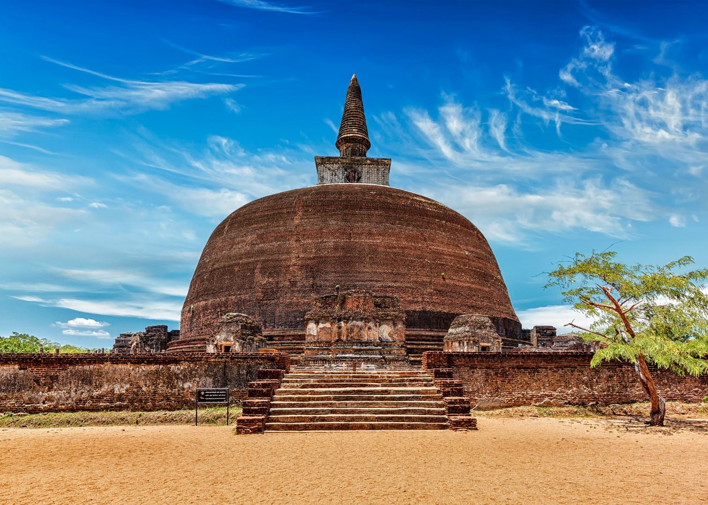Visiting Hours: 7:00 AM - 5:30 PM
Polonnaruwa is a UNESCO World Heritage site and was the second capital of ancient Sri Lanka.
View on MapAnuradhapura
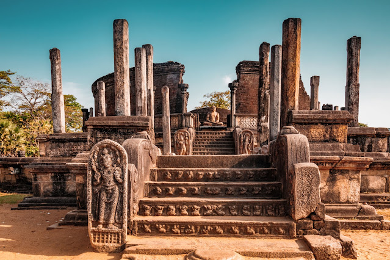Visiting Hours: 6:00 AM - 6:00 PM
Anuradhapura is one of the ancient capitals of Sri Lanka, famous for its well-preserved ruins and stupas.
View on MapGalle Fort

Visiting Hours: Open 24 hours
Galle Fort, a UNESCO World Heritage Site, is a historic fortress located in the coastal city of Galle.
View on MapUnawatuna Beach
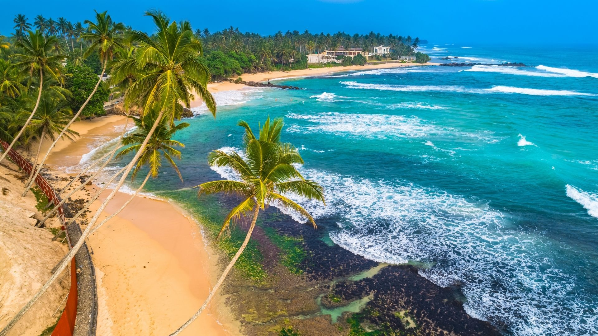Visiting Hours: Open 24 hours
Unawatuna Beach is one of the most popular beaches in Sri Lanka, known for its golden sands and clear waters.
View on MapMirissa Beach
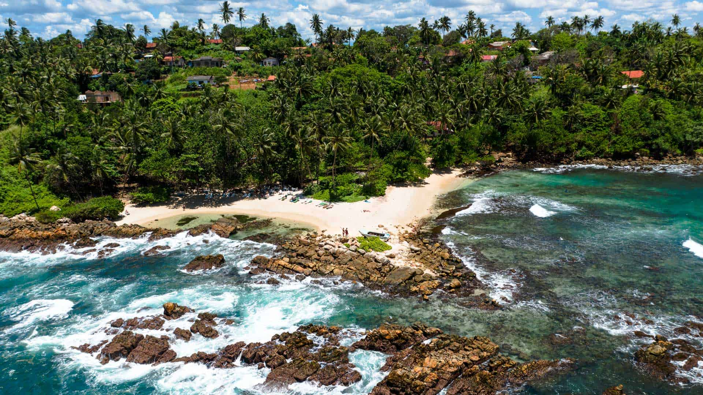Visiting Hours: Open 24 hours
Mirissa Beach is famous for its picturesque bay and whale watching tours.
View on MapArugam Bay
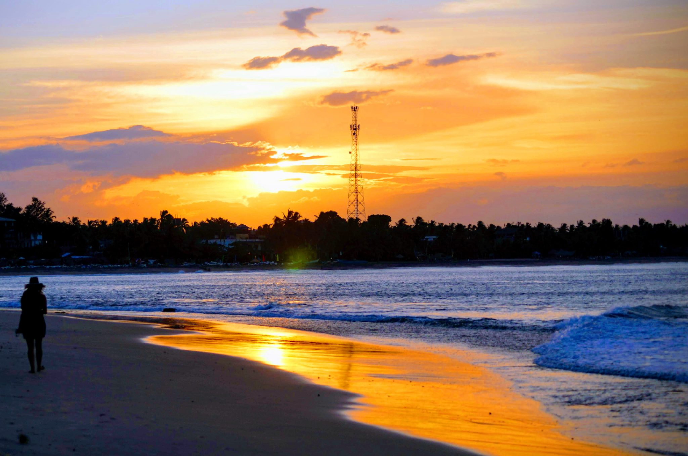Visiting Hours: Open 24 hours
Arugam Bay is a world-renowned surfing destination on the southeast coast of Sri Lanka.
View on MapNilaveli Beach
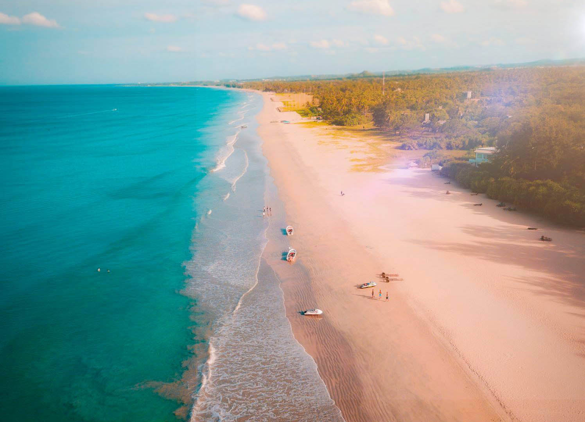Visiting Hours: Open 24 hours
Nilaveli Beach is known for its serene beauty and is a great spot for snorkeling and diving.
View on Map